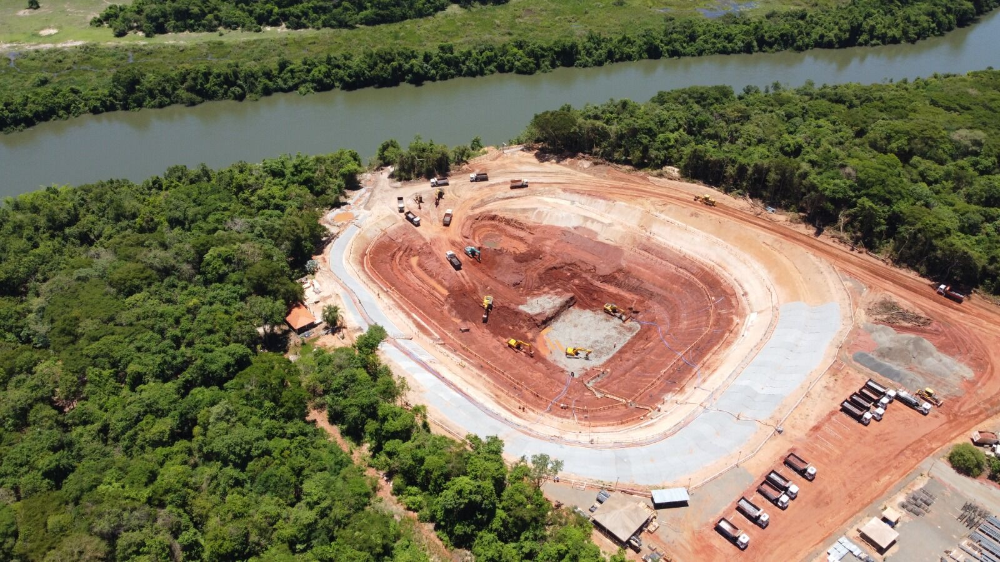
Inocência · MS
Fábrica de Celulose Arauco
Projeto Sucuriú: terraplenagem, concreto e alvenaria na construção da nova fábrica de celulose e da sua planta química.
Sobre a obra
Na construção da fábrica de celulose da Arauco em Inocência (MS), a Saccani atua em frentes de terraplenagem, concreto e alvenaria, da captação de água à planta química do complexo.
Principais serviços
- Terraplenagem da Captação de Água
- Alvenaria na Sala Elétrica da ETA
- Laje e piso do tanque de água desmineralizada · ETAC
- Edifício de Dissolução de Produtos Químicos e Bissulfito de Sódio
Terraplenagem da Captação de Água
Arauco · Inocência — MS
Terraplenagem e conformação dos taludes da estrutura de captação de água da fábrica, às margens do rio, além da escavação da vala da adutora.
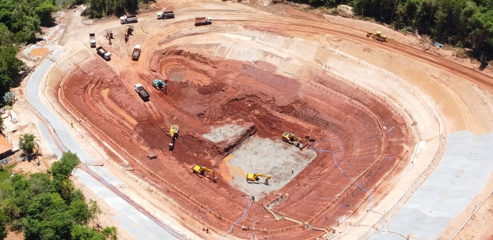
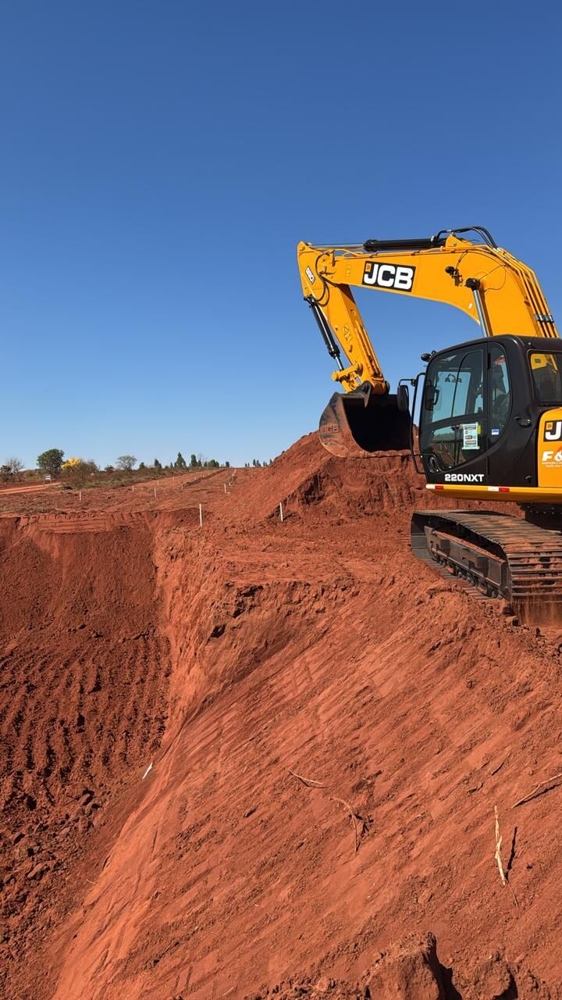

Alvenaria na Sala Elétrica da ETA
Arauco · Inocência — MS
Fechamentos em alvenaria de blocos de concreto no prédio da sala elétrica da Estação de Tratamento de Água.

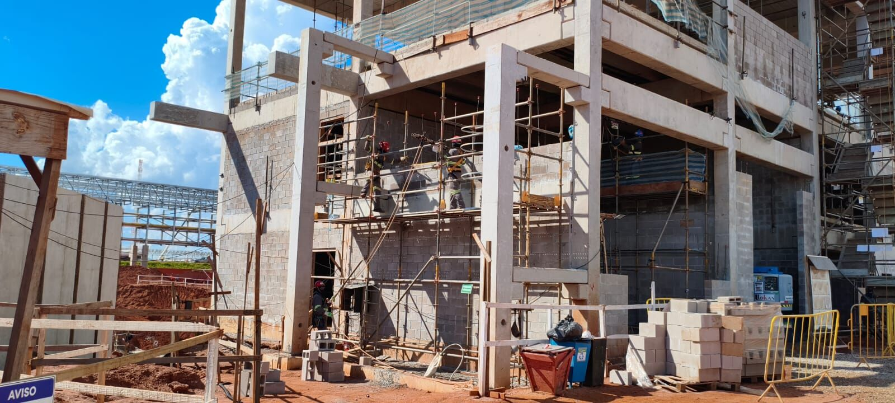
Laje e piso do tanque de água desmineralizada · ETAC
Arauco · Inocência — MS
Armação, formas e concretagem da laje de fundo circular do tanque de água desmineralizada, com lançamento por bomba-lança e acabamento da superfície.
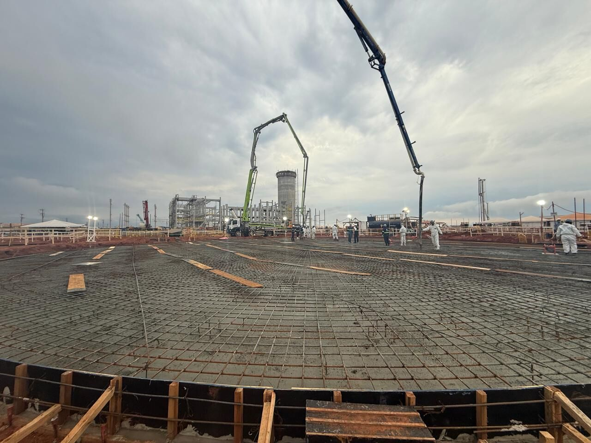

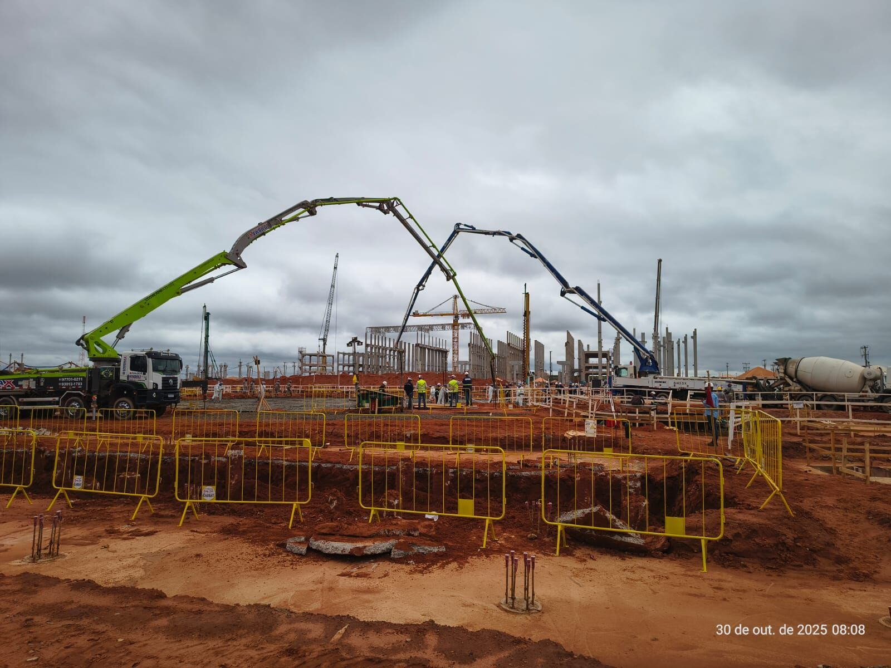
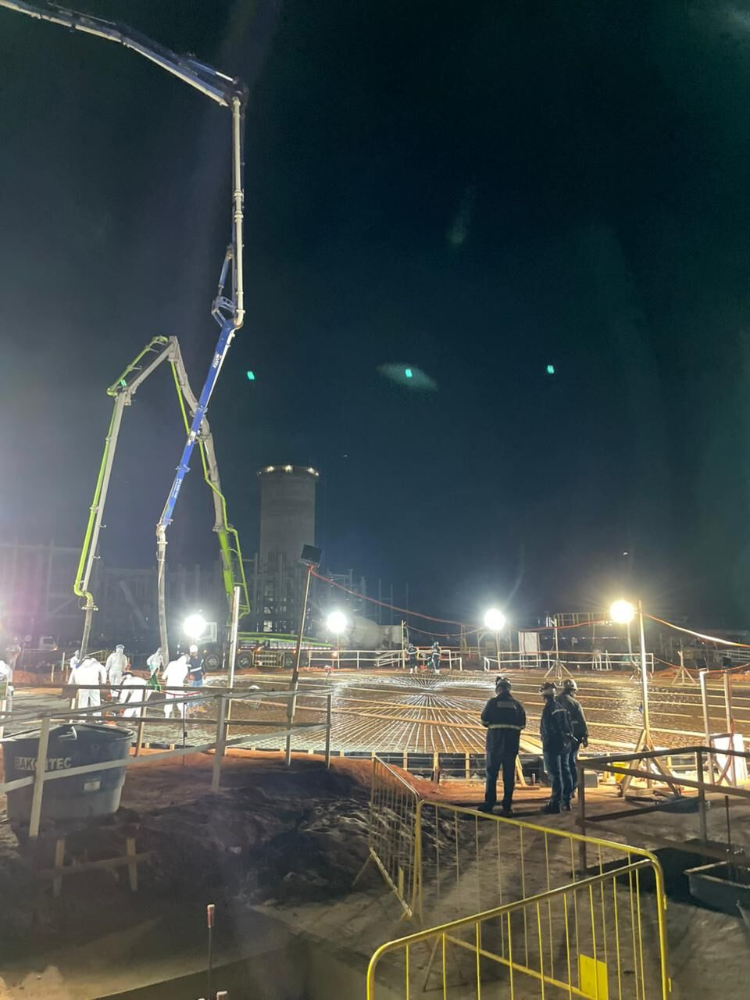
Edifício de Dissolução de Produtos Químicos e Bissulfito de Sódio
Arauco · Planta química
Serviços civis no edifício de dissolução de produtos químicos e bissulfito de sódio da planta química do complexo: blocos, bases e pisos em concreto sob a estrutura pré-moldada.

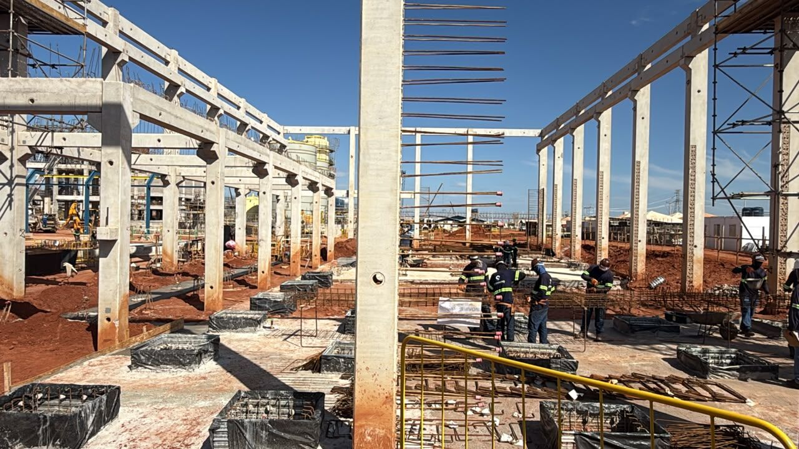
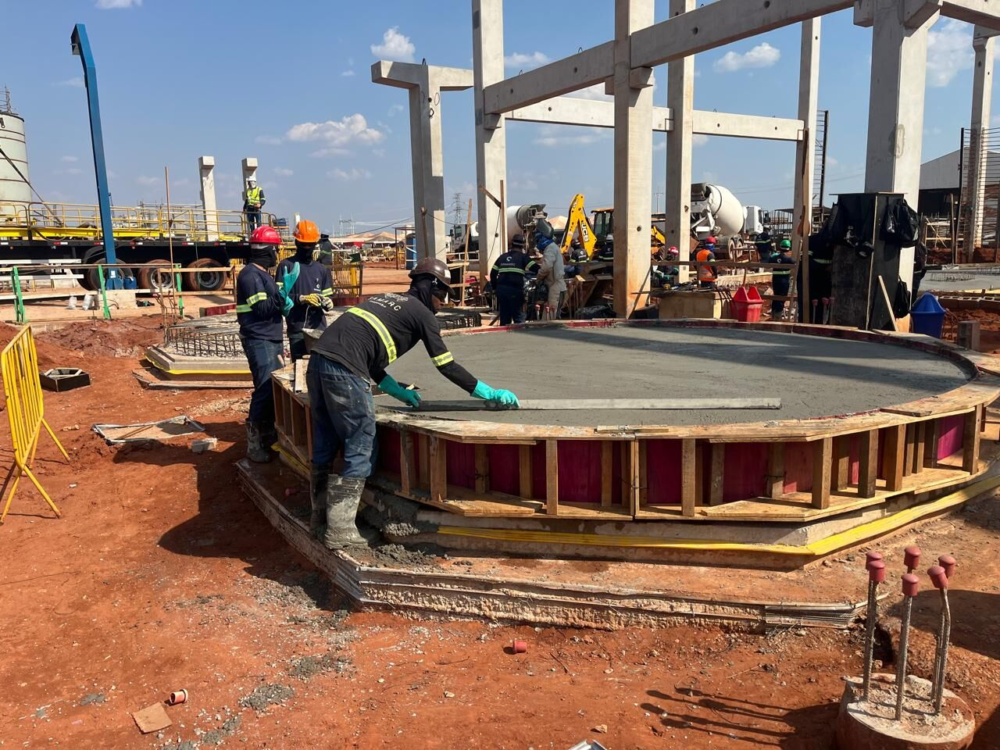
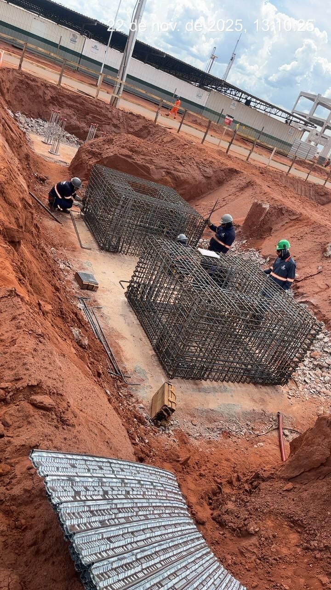
Outras obras
Todas as obras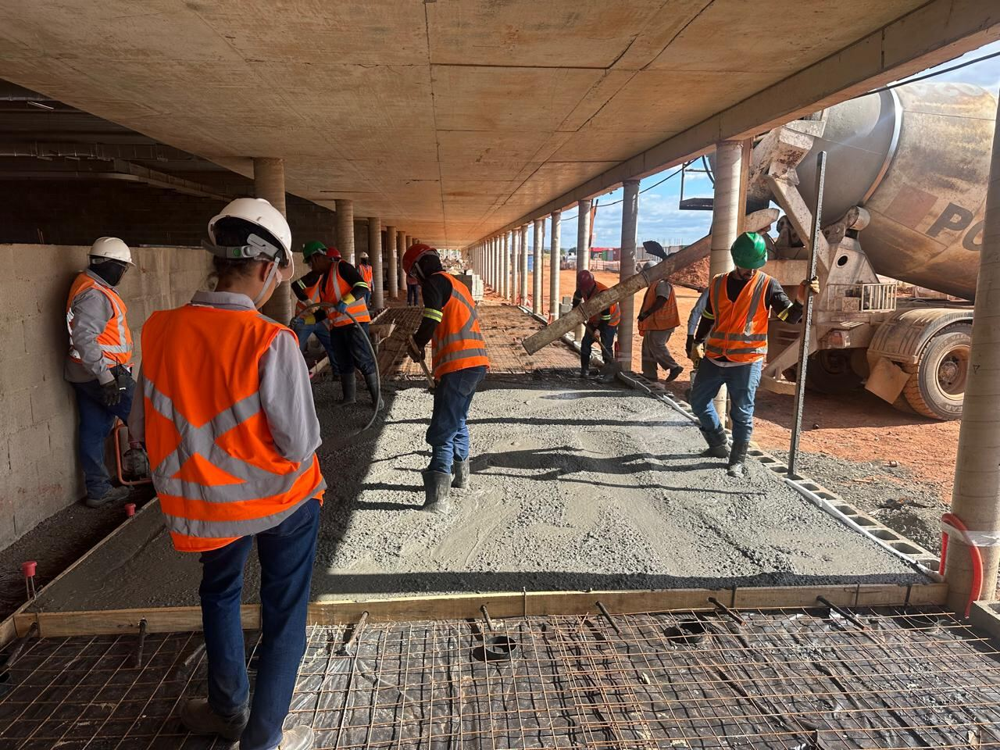
Passos · MS
Fábrica da Cervejaria Heineken

Ribas do Rio Pardo · MS
Suzano: manutenção de filtro de areia na ETA
Quer começar uma nova obra ou manutenção?
Solicite uma visita técnica com escopo, prazo e equipe dimensionada.